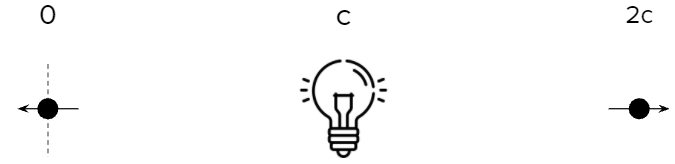

Twice the speed of light
The speed of light is as fast as things go, right?
A simple thought experiment indicates otherwise. The maximum speed in the universe maybe twice the speed of light
I am sharing this here because I have not heard a clear explanation as to why it is wrong. Maybe you can help?
2c or not 2c?
Imagine you are at a train station and a train whips by at 30 m/s. At the same time another train travels in the opposite direction at the same speed. After one second either train is 30 m from you but 60 m from each other.
Trains moving in opposite directions with you as the point of referene
Relative to you they both have a speed of 30 m/s but relative to each other it is 60 m/s. Let's make one of the trains the point of reference

If a train is the point of reference then the other train is moving twice as fast
More generally, if two trains have the same speed, x m/s, but are travelling in opposite directions then they have a relative speed of 2x m/s. This is because speed is relative. The speed of an object therefore depends on the point of reference.
Now imagine you are holding a lightbulb. Two photons are emitted at the same time in opposite directions. The photons have a speed of c relative to the lightbulb.
Two photons travelling away from a lightbulb
If one of the photons is the point of reference then the other photon is travelling at 2c. In other words, at twice the speed of light.
A photon can travel at 2c relative to another photon
Conclusion
Two photons travelling in opposite directions can have a relative speed of 2c. All speed is relative. Therefore the maximum speed in the universe is 2c.
Special Limit
Someone once suggested that whilst this might be true for trains it is not true for photons. If this is the case, is there a speed limit at which this logic no longer applies?